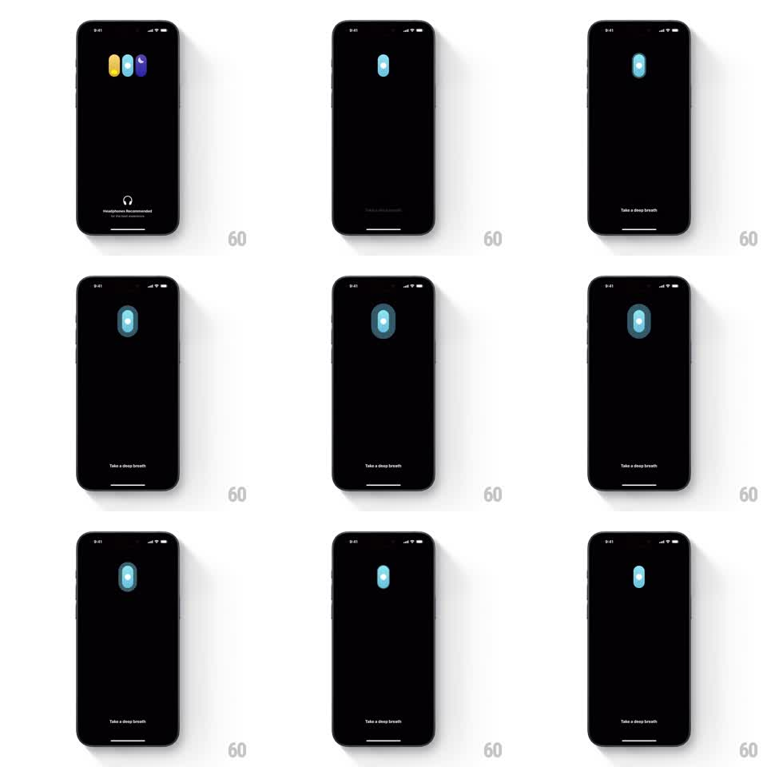

Media
Frame-by-frame

Rebuild this animation 1:1: Unwind's splash - three colored capsules merge into one breathing capsule that pulses like a slow inhale before dissolving into the app.

Rebuild this animation 1:1: Unwind's splash - three colored capsules merge into one breathing capsule that pulses like a slow inhale before dissolving into the app. ## Integration Integration: stack-agnostic spec - springs given as stiffness/damping, timed motions as duration + curve; map every value to your framework and animation library of choice. ## Scene Black screen. Three vertical capsules - yellow, light blue, purple - stand side by side center stage with a "Headphones recommended" note below. They merge into a single pale-blue capsule as "Take a deep breath" fades in at the bottom. The capsule then breathes: swelling with soft concentric glow rings, then releasing. ## Motion spec Pattern: merge-then-breathe capsule. - Merge (0-800ms): the three capsules slide together (springs ~200/22, 60ms stagger from outside in), colors cross-blending into one pale-blue capsule at center; the headphones note crossfades to "Take a deep breath" (300ms). - Inhale (800ms-2.8s): the capsule scales 1 to 1.25 over 2s (ease-in-out sine), a soft halo ring expands around it (radius 1x to 1.8x, opacity 0.35 to 0) in sync, and the capsule's inner highlight brightens. - Exhale (2.8-4.8s): the capsule scales back to 1 over 2s; the halo contracts and fades; brightness settles. - The breath cycle repeats once more at a slightly deeper amplitude (1.3x), then the capsule scales down to 0.9 while fading (400ms) as the app background blooms in behind it. ## Calibration - Breathing tempo is the spec: ~4s per full cycle, sinusoidal easing - linear breathing feels mechanical. - The halo ring is the exhale made visible; keep it soft (blurred edge, low opacity). ## Reduced motion Single capsule fades in, one gentle pulse, transition. ## Don't miss - The three starting capsules are the brand mark - yellow, light blue, purple, in that order. - "Take a deep breath" sits small at the bottom; the capsule is the entire focus.